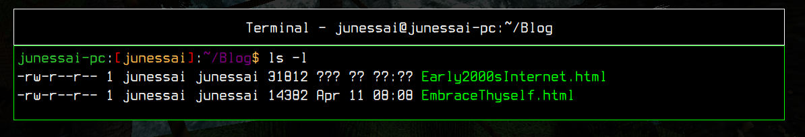

Posted on September 20, 2022, 07:00
Last updated on September 20, 2022, 07:00
Written By June S. Sai
Holy shit, I'm finally doing one of these again, ain't I?
And unexpectedly, it's a devlog of all things
But why that?
Well, as you can see, after updating a lot of the sections, mostly the older ones, like the
Blog and Guestbook section, which received a massive design and visual overhaul, the updates
Kinda stopped there, and now the site, although not abandoned, isn't seeing any real new content
besides the Daily Song and Message being updated regularly
Well, I'll try to keep it brief, but it's mostly two reasons
First of all, do you remember how the first Blog and Guestbook Section looked like?
Well, I do, and god, did it look fucking terrible
It didn't work well visually, and neither it did technically
Let's start with the Blog Section, which was mainly inspired by the Artix Linux Terminal
Although I did like the idea, in praticallity, it wasn't very effective
First of all; there was a lot of information to take in, and most of it wasn't really that important
to begin with, like the size of the file, my username, and that whole -rw-r--r-- thing, they didn't
really add anything of importance to that section, and in many ways, it was too cluttered and un-
necessarily confusing and de-organized, specially for newer users, so a while ago, I decided that
the Blog Section would get reworked, but I went through multiple ideas until I reached I ultimately
decided on the current design
The first thing that came into my mind at the time, was the Serious Sam's Netricsa HUD, which all
things considered, fitted perfectly well with the site, specially since during that time, the site
and it's theme was taking heavy inspiration from Serious Sam, from backgrounds, to buttons, and even
the old logo, which went from a Dark Red to a orange-ish yellow to fit with the desert backgrounds
but it was also a little too simple for my taste, and I wanted something with flair, something
more unique, that would allow me to put more personality into each post, and recently, I've been
revisiting the Something Awful site, and then I saw how they structured their posts, and although
it wasn't exactly what I wanted, with a bit of tinkering, I got my blueprint for the redesign
It was incredibly simple, but it didn't look bad, and it worked pretty well too, you got a title
description, post date and the name of the author, every crucial information is there, and easily
found with no further complication
But I didn't want to just copy Something Awful, I wanted to give it my own flair, so I quickly
thought of adding a background for each post to make every post more distinct from each other
and thus, work started, and the problems started to appear with it
Working with the divs and flex divs was a fucking nightmare, specially since the line-height made so
fonts would clip in case they had an automatic line break, instead of me manually adding one, but that
wasn't even the worst part, the worst part was making everything staying at the same size, but the way
I was doing it wasn't really helping me, and that's because I was changing the width from the main div
instead of the wrapper, so although things would look ok with a single element, the moment I added
another one, things would suddenly break, and after tinkering and fussing around with it through my
whole afternoon and night, I decided to ask for solutions on stackoverflow, and turns out, instead of
using the width option on the main div, I should have been using max-width option on the wrapper instead
So that solved the issue, but that took me a lot of headbreaking, and experimentation, and even after
I solved the width problem, I still had to make everything else look right, which took me even more time
because positioning everything, and making the CSS work properly for each individual post wrapper was a
fucking nightmare to implement, and that's mostly due to the fact I'm not accostumed with messing with
divs and wrappers, so it took me a while to understand what I was doing wrong, but after a while, I got
it to look the way I wanted it too, it took me a while, but ultimately, it was worth it, not only I got to
organize the topics and improve the presentation of the site further, but it was also easier to navigate
through the blog and find the content you were looking for
And after being done with the blog, I took a good look into the Guestbook Section, and I thought that it
could also get an overhaul, and luckily for me, the work I've done on the Blog Section could be reutilized
on the Guestbook Section aswell, so that didn't take me long to rework, the only real issue was getting the
background positioning right, and also setting up individual border colors for every single guest comment
aswell, but it was overall a very pleasing experience all things considered, specially in comparision to
the trouble I went with the blog section
And well, I'm proud of how the site is looking now, it's incredibly refined, and pretty much everything
is looking pretty great, and working pretty great aswell, so now, I can finally focus on adding more
content to the site, and implement the new sections I've been thinking of implementing for a while now
But that's also a problem
I'm really fucking tired, in two major ways
The first one is burnout
After reworking these sections, and the amount of time and effort I put into it, it stressed me to no
end, to the point I dread having to rework a section again, and although I do think learning something
new is indeed incredibly fun, specially after you manage to hit the results you've been looking for
I wasn't really either in the best headspace to break my head trying to solve any more problems than
the ones I was having back then, and still am having as of now
And that's the second problem
I'm stressed and saddened to no end, and that's mostly because the dread of loneliness is hitting me
again with full force, because in one way, I'm glad I'm getting the chance to finally stay away from
my dad and everyone else in here, since my dad is pretty much moving away after a pretty nasty fight
I had with him and his awful girlfriend, and although I'm happy to have more space for me, I'm also
feeling incredibly miserable due to the fact I haven't really got the chance to enjoy my time with
my friends due to how tired I've been feeling, and the fact I keep thinking about the fact I'm
rotting away all by myself, while most if not everyone I know is making huge strides in their lifes
by either getting jobs, or getting into new relationships, while I'm mostly feeling stagnant
and all by myself, specially since I can't even trust my own father anymore, so all of the ideas in
my head are feeling either corrupted or souless, every concept feels tiring and uninteresting, and
that's the last type of content I'd want to insert into my website, I made this site with love, and
I want the content and the stuff I put into it to reflect that, hence why I haven't been posting nor
adding more content to the site as of lately, I've been just taking a little bit of time to reflect
on things, and where I want to take this next, but don't you worry, I won't abandon the site
Not any time soon, and if possible, never, it's here to stay, either you like it or not
But that's about it
I hope you all are having an amazing weekend
We'll meet again soon, until then, stay safe.
Coding
-June S. Sai